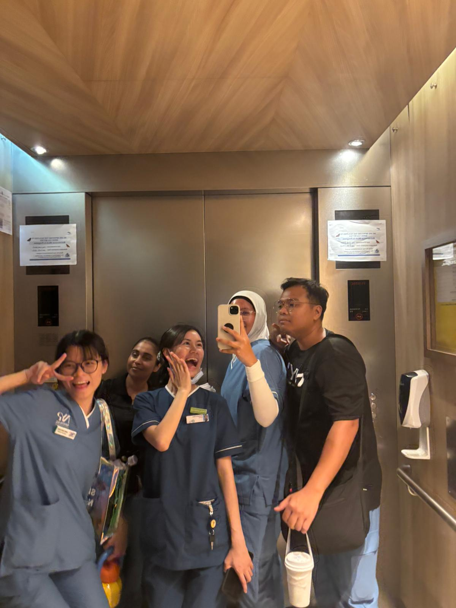

#1 Leading and Coordinating a Monthly K-Pop Dance Cover Group
This project highlights my practical experience in leadership, organization, and project management, essential for coordinating team efforts in a demanding healthcare environment.

Role: Group Leader and Time Allocation Manager
Led a team through monthly production cycles, ensuring smooth operations and high-quality outcomes.
Developed and managed rehearsal schedules and crew allocations, consistently meeting monthly deadlines.
Maintained clear communication channels, managed expectations, and fostered a cohesive, productive team dynamic.
Initiative, teamwork, planning, organizational skills, effective communication, and leadership potential.
#2 Acute Care Nursing: Managing Complex Patient Cases
Experience gained in an acute ward environment, demonstrating my capacity to handle high-pressure situations, manage complex patient needs, and perform critical clinical procedures relevant to the Hospital at Home program.


Focus Areas: Gastrointestinal conditions, step-down patients from ICU/HD.
Performed hands-on procedures including IV cannulation, blood sampling, and comprehensive vital sign monitoring.
Assessed patient conditions in a fast-paced environment and managed immediate care requirements effectively.
Managed a diverse range of complex patient scenarios, showcasing resilience and clinical capability under pressure.
Clinical skills, critical thinking, adaptability, high-pressure management, assessment.
#3 Multidisciplinary Team Collaboration in Subacute and Rehabilitation Settings
This project showcases a focus on holistic recovery, geriatric care, and seamless continuity of care through collaboration with various healthcare professionals.
Focus Areas: Rehabilitation, geriatric care, multidisciplinary collaboration.
Provided hands-on care for elderly and step-down patients, focusing on recovery and quality of life.
Worked closely with physiotherapists and occupational therapists, contributing to well-rounded patient care plans.
Gained vital experience in educating patients and family members, ensuring they can provide adequate care upon discharge (Caregiver Training).
Teamwork, patient education, empathy, holistic care approach, multidisciplinary collaboration, continuity of care planning.